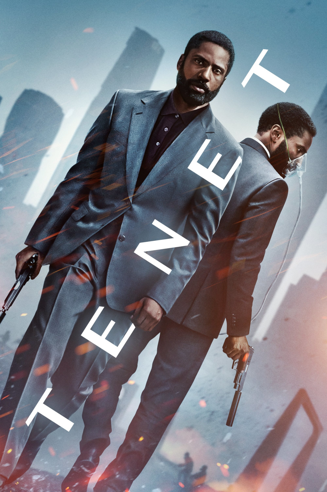

Мировая премьера: 3 сентября 2020
Слоган: Время уходит.
Сюжет: Вооружившись лишь одним словом – "Довод" – и сражаясь за выживание всего мира, протагонист погружается в дебри международного шпионажа с заданием, что выведет его за пределы реального времени.
Режиссёр: Кристофер Нолан
В ролях: |
Джон Дэвид Вашингтон | Протагонист |
| Роберт Паттинсон | Нил |
|
| Кеннет Брана | Андрей Сатор |
|
| Элизабет Дебики | Кэтрин Бартон |
|
| Димпл Кападия | Прия Сингх |
|
| Аарон Тейлор-Джонсон | Айвз |
|
| Майкл Кейн | Сэр Майкл Кросби |
|
| Клеманс Поэзи | Барбара |
|
| Мартин Донован | Фэй |
|
| Фиона Дуриф | Уилер |
|
| Химеш Патель | Махир |
|
| Джек Катмор-Скотт | Клаус |
|
| Юрий Колокольников | Волков |
Бюджет: $ 205 млн.
Кассовые сборы в США: $ 58 млн.
Кассовые сборы в мире: $ 365 млн.
Продолжительность: 2 ч. 24 мин.
Рейтинг: 7.3